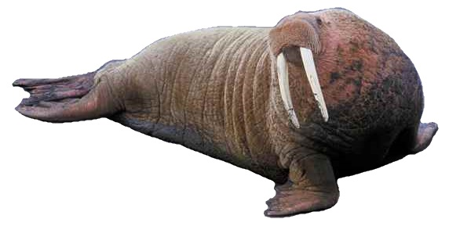

Peek-a-boo is an ancient game riddled in mystery and deceit. Though it appears to be an innocent children's pastime, you may change your mind when you learn of its treacherous history.
Let's play peek-a-boo. Show Image to see the surprise!
What a cute walrus! Hide Image to hide her again.
The walrus (Odobenus rosmarus) is a large flippered marine mammal with a discontinuous distribution about the North Pole in the Arctic Ocean and subarctic seas of the Northern Hemisphere. The walrus is the only living species in the family Odobenidae and genus Odobenus. This species is subdivided into two subspecies:[2] the Atlantic walrus (O. r. rosmarus), which lives in the Atlantic Ocean, and the Pacific walrus (O. r. divergens), which lives in the Pacific Ocean.